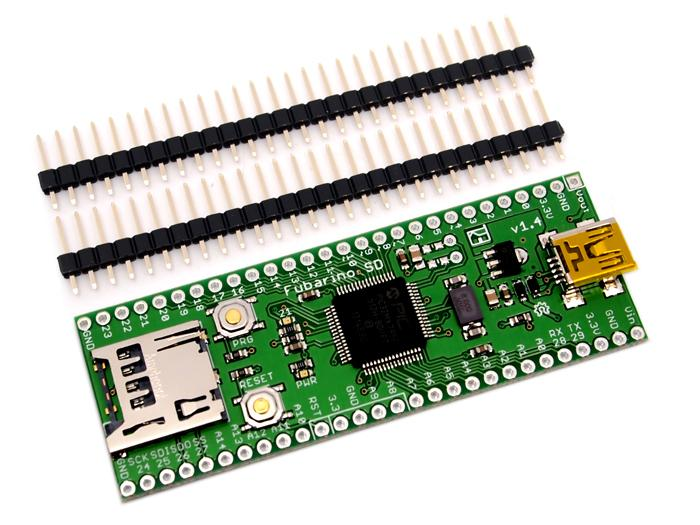

Fubarino SD
Fubarino SD is a small, easily breadboardable microcontroller board. It is chipKIT and MPIDE compatible, which means you can write sketches for it in MPIDE, which is the Arduino IDE fork for chipKIT compatible boards. The microcontroller on the board is a Microchip PIC32MX440F256H.

Features
- USB connector wired to the PIC32's USB peripheral.
- microSD connector wired to hardware SPI periperhal on PIC32.
- Complete integration and compatibility with MPIDE - in fact, current versions of MPIDE support Fubarino SD as a target board.
- All I/O and power pins in standard "DIP" form factor for easy use with a breadboard.
- Powered from USB connector, external 3.3 or external 2.8V to 13.2V power supply.
- 15 analog inputs (10 bits)
- 45 digital I/O pins
- ICSP header pins if you want to use a hardware programmer or debugger under MPLAB or MPAB X IDEs. (both free from Microchip)
- Like all chipKIT compatible boards, the Fubarino SD can run any Arduino sketch or library as long as they don't access native AVR registers directly.
- All I/O operates at 3.3V, but many I/O pins are 5V tollerant.
- PIC32MX440F256H is a 32 bit processor running at 80 MHz with 256K of Flash and 32K RAM
- Can use USB (5V), 3.3V or 2.3V to 15V input for power
- Includes 4 DMA channels, 1 SPI (used for microSD but brought out to pins), 2 I2C ports, USB (host, function, OTG), 15 A/D channels (10 bit), 5 16-bit timers, 5 hardware PWM, PMP, etc. as part of PIC32 processor
FAQ
For the Fubarino SD FAQ, please see the Fubarino SD website.
Version Tracker
| Revision
|
Descriptions
|
Release Date
|
| Fubarnio 1.4
|
Initial public release
|
September 6th 2012
|
Support
Please use the Github issue tracker for any bugs related to Fubarino SD hardware. For bugs in MPIDE, software or libraries, please refer to the chipKIT/MPIDE forum or the chipKIT/MPIDE Github issue tracker.
Note that the first 100 Fubarino SD boards were mistakenly built with PIC32MX795F512 parts. This should not impact sketches built from MPIDE. However, it does mean that RetroBSD is an option for these first 100 boards.
Resources
- Fubarino SD v1.4 board and schematic (Eagle 6 format) - Github directory
- Fubarino SD v1.4 schematic (PDF)
- Fubarino SD v1.4 board layout (PDF)
- Fubarino SD v1.4 BOM (Excel)
- Fubarino SD Reference Manual (Word)
- USB Bootloader (avrdude compatible) HEX file note: right click and select 'save as' to get the .HEX file - the board already comes with this bootloader pre-programmed
- Factory Test sketch This sketch is what the factory uses to test the Fubarino SD board - right click and select 'save as'.
How to buy
Buy Fubarino SD on SEEED Bazaar.
See Also
Have any ideas for related products? Put them here!
Licensing
The Fubarino SD hardware is licenced under the Solderpad Hardware License v0.5. All MPIDE source code is licenced under GPL or other open source software licenses.
Authors
Fubarino SD was designed by Brian Schmalz (from Schmalz Haus LLC) and Rick Anderson (from Fubar Labs). Both are also on the chipKIT/MPIDE development team.
External Links
Links to external webpages which provide more application ideas, documents/datasheet or software libraries
Copyright (c) 2008-2016 Seeed Development Limited (
www.seeedstudio.com /
www.seeed.cc)
This static html page was created from http://www.seeedstudio.com/wiki